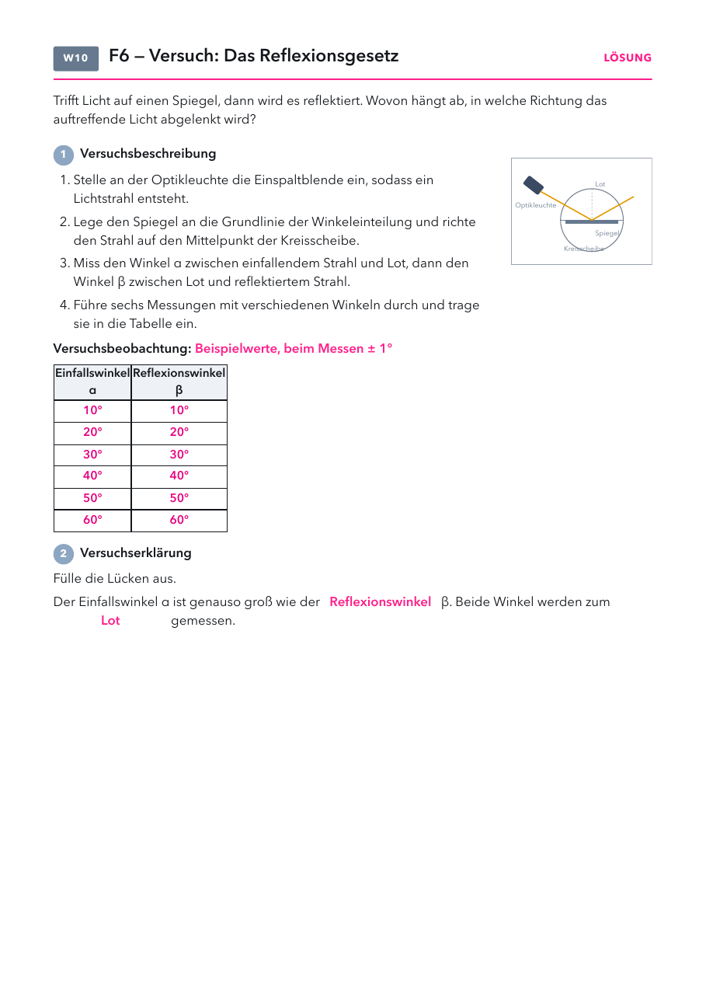

- Versuchsblatt: Kopiervorlage „2 auf 1“, halbe Klassenstärke drucken und in der Mitte durchschneiden.
- Folien und Lösungen: nicht drucken.
Material
Demo (für dich)
| Material | Anzahl | Hinweis |
|---|---|---|
| Spiegel und Taschenlampe | 1× | für den Einstieg, Licht an die Decke lenken |
Schülerversuch (pro Gruppe)
| Material | Anzahl | Hinweis |
|---|---|---|
| Optikleuchte mit Einspaltblende | 1× | oder Ray-Box mit einem Spalt |
| ebener Spiegel | 1× | an die Grundlinie der Kreisscheibe |
| Kreisscheibe mit Winkeleinteilung | 1× |
Raum abdunkeln. Den Strahl genau auf den Mittelpunkt der Scheibe richten.
Die Stunde
1 · Einstieg
2 · Versuch
3 · Reflexionsgesetz
4 · Alltag
1
Einstieg
Spiegel und Hand heben, Leitfrage 6, Vermutungen.
Spiegel und Hand heben, Leitfrage 6, Vermutungen.
2
Versuch
Kreisscheibe in Gruppen, sechs Messungen, Versuchsblatt.
Kreisscheibe in Gruppen, sechs Messungen, Versuchsblatt.
3
Reflexionsgesetz
Merksatz, Winkel zum Lot.
Merksatz, Winkel zum Lot.
4
Alltag
Beispiele mündlich, Frage zum weißen Blatt.
Beispiele mündlich, Frage zum weißen Blatt.
Folie 1
Beobachte
Stell dich vor den Spiegel und hebe die rechte Hand. Was macht dein Spiegelbild?
Folie 2
Leitfrage 6
Was passiert mit dem Licht am Spiegel?

Was vermutest du? Wir sammeln eure Vermutungen.
Folie 3 · Schülerblatt mit Lösung
📄 Versuchsblatt austeilen · Versuch in Gruppen

Folie 4
13. Das Reflexionsgesetz
Trifft Licht auf einen Spiegel, wird es reflektiert.
Dabei gilt: Einfallswinkel = Reflexionswinkel.
Beide Winkel werden zum Lot gemessen.
Folie 5
Reflexion im Alltag
| im Alltag | was man sieht | warum |
|---|---|---|
| Rückspiegel im Auto | die Straße hinter dir | Licht von hinten wird am Spiegel zum Fahrer reflektiert. |
| Periskop im U-Boot | über die Wasseroberfläche schauen | Zwei schräge Spiegel lenken das Licht zweimal um. |
| glatter See am Morgen | ein klares Spiegelbild der Berge | Die glatte Oberfläche reflektiert regelmäßig. Bei Wellen wird das Licht gestreut. |
| Billard an der Bande | die Kugel prallt im gleichen Winkel ab | Wie beim Licht: Einfallswinkel = Reflexionswinkel. |
Frage: Warum siehst du dich in einem Spiegel, aber nicht in einem weißen Blatt Papier?
Das Reflexionsgesetz
- Einfallswinkel und Reflexionswinkel werden immer zum Lot gemessen, also zur Senkrechten auf dem Spiegel. Einfallender Strahl, Lot und reflektierter Strahl liegen in einer Ebene.
- Das Gesetz gilt an jeder Stelle einer Fläche. Bei einer rauen Fläche zeigt das Lot an jeder Stelle in eine andere Richtung, deshalb wird das Licht in viele Richtungen zurückgeworfen (Streuung aus Leitfrage 2).
- Typische Fehlvorstellungen: Winkel werden zum Spiegel gemessen. Der Spiegel „schluckt“ bei großen Winkeln Licht.
Tipps zum Versuch
- Den Spiegel genau an die Grundlinie legen, sonst weichen die Werte ab. Messwerte auf ± 1° sind normal.
- Bei 0° läuft der Strahl in sich zurück. Guter Anlass für die Frage, wo das Lot ist.
- Das Buch zeigt auf S. 45 A glatte und zerknitterte Alufolie im Vergleich. Passt als Zusatz zur Frage auf der Alltagsfolie.
Spiegellabor
Labor öffnenAlle LaboreKreisscheibe mit Winkelregler, gekippter Spiegel mit Lot, Spiegelbild, Spiegelgröße, Spiegelschrift auf dem Krankenwagen.
Versuchsblatt Reflexionsgesetz
PDF öffnenKopiervorlage 2 auf 1Lösung: In jeder Messung ist β gleich α (Beispiel 10°/10° bis 60°/60°, ± 1°). Lücken: Reflexionswinkel, Lot.